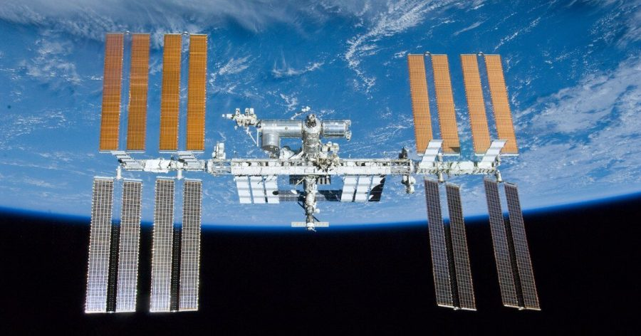

အပြည်ပြည် ဆိုင်ရာ အာကာသ စခန်းမှာ ရပ်နားထားတဲ့ ရုရှား ဆိုယုဇ် အာကာသယာဉ်က အအေးပေး ဓါတ်ငွေ့ရည်တွေ ယိုစိမ့်မှု ဖြစ်ပွားခဲ့တယ် ဆိုတာကို ကျွန်တော်တို့ တင်ပြခဲ့ ပါတယ်။
ဒီ ဖြစ်ရပ်ကြောင့် အပြည်ပြည် ဆိုင်ရာ အာကာသ စခန်း (ISS) ပေါ်က ပြည်တော်ပြန် ကြမယ့် ယာဉ်မှူးတွေ ပြန်ဆင်းဖို့ နှောင့်နှေး ကြန့်ကြာမှုတွေ ဖြစ်ပေါ် လာကောင်း လာနိုင်တယ် ဆိုတာကိုလဲ တင်ပြ ခဲ့ပါတယ်။
ဆက်စပ်ဆောင်းပါး – အပြည်ပြည်ဆိုင်ရာ အာကာသစခန်းရှိ ရုရှားဆိုယုယာဉ်မှ ဓါတ်ငွေ့ယိုစိမ့်မှု ဖြစ်ပွား
အခုအခါ အကယ်လို့သာ အာကာသ ယာဉ်မှူးတွေ ပြန်ဆင်းဖို့ ဆိုယုဇ် အာကာသယာဉ်ကို စိတ်ချစွာ အသုံးမပြုနိုင်ဘူး ဆိုရင် ဒီယာဉ်မှူး တွေကို ကယ်ဆယ် နိုင်ရေးအတွက် SpaceX နဲ့ ဆွေးနွေးမှုတွေ ပြုလုပ်နေတယ် ဆိုတဲ့ သတင်းတွေ ထွက်ပေါ်လို့ လာခဲ့ပါတယ်။
အပြည်ပြည်ဆိုင်ရာ အာကာသ စခန်းမှာ စိုက်ကပ်ထားတဲ့ ဆိုယုဇ် အာကာသယာဉ်က အအေးပေး ဓါတ်ငွေ့ရည်တွေ ယိုစိမ့် ထွက်ခဲ့တယ် ဆိုတာကို ပြီးခဲ့တဲ့ ဒီဇင်ဘာ ၁၄ ရက်နေ့က နာဆာက ကြေငြာ ခဲ့ပါတယ်။
ဒီဖြစ်စဉ်ကြောင့် မူလက စီမံထား ခဲ့ကြတဲ့ အာကာသတွင်း လမ်းလျှောက်ထွက်မယ့် အစီအစဉ်ကိုလဲ ဖျက်သိမ်း ခဲ့ရပါတယ်။ ဒါ့အပြင် ဒီ ဆိုယုဇ်ယာဉ်နဲ့ ကမ္ဘာကို ပြန်ဆင်းမယ့် ရုရှား အာကာသ ယာဉ်မှူး နှစ်ဦးနဲ့ အမေရိကန် အာကာသ ယာဉ်မှူး တစ်ဦးတို့ရဲ့ အိမ်ပြန် ခရီးစဉ် ကိုလဲ ထိခိုက်မှု ရှိလာ ခဲ့ပါတယ်။
ယခုလက်ရှိ အာကာသ စခန်းယာဉ်ပေါမှာ ယာဉ် အဖွဲ့သား ၇ ဦး ရှိနေပါတယ်။ ဒီ အထဲက ၃ ဦးဟာ လာမယ့် မတ်လထဲမှာ ကမ္ဘာကို ပြန်ဆင်းဖို့ စီစဉ် ထားကြတာ ဖြစ်ပါတယ်။ ဒါပေမယ့် ဆိုယုဇ် အာကာသယာဉ်ကို အချိန်မီ ပြန်လည် ပြင်ဆင်ခြင်း မပြုနိုင်ဘူး ဆိုရင် ဆင်းမယ့် ကိစ္စအတွက် ပြဿနာတွေ ရှိလာ နိုင်ပါတယ်။
ရုရှား အာကာသ အေဂျင်စီ ကတော့ “လက်ရှိမှာ အရေးပေါ် ပြန်လည် ကယ်ဆယ်ရေး လုပ်ဖို့ မလိုအပ်ဘူး” လို့ ဆိုပါတယ်။ ဒီလဆန်းက ထုတ်ပြန်ခဲ့တဲ့ ရုရှား အာကာသ အေဂျင်စီရဲ့ ထုတ်ပြန်ချက်အရ ဓါတ်ငွေ့ ယိုစိမ့်မှု အပြီး အာကာသ ယာဉ်အတွင်း အပူချိန်ဟာ တည်ငြိမ်မှု မရှိ ခဲ့ကြောင်း၊ ဒါပေမယ့် အခုအချိန်မှာတော့ အခြေအနေတွေ ပြန်လည် ကောင်းမွန်လာပြီ ဖြစ်ကြောင်း ဖော်ပြ ပါရှိပါတယ်။
“အခုရက်ပိုင်းအတွင်း ယာဉ်ရဲ့ စနစ်တွေ ပိတ်သိမ်း ရပ်နား ထားခဲ့ပြီးတဲ့နောက် ယာဉ်အတွင်း အပူချိန်ဟာ ဒီဂရီ စင်တီဂရိတ် ၃၀ ခန့်မှာ တည်ငြိမ်နေ ခဲ့ပါတယ်” လို့ ကြေငြာချက်မှာ ဖော်ပြ ပါရှိပါတယ်။
ဒီကြောငြာ ချက်မှာပဲ ဒီလို သတ်မှတ် အပူချိန်ထက် ပိုမိုလွန်ကဲ နေတာဟာ ပြဿနာ မဟုတ်ကြောင်းနဲ့ အခု ဓါတ်ငွေ့ ယိုစိမ့်မှုကြောင့် လက်ရှိကာလမှာ ယာဉ်အဖွဲ့သားတွေအပေါ် ထိခိုက်မှု တစုံတရာ မရှိကြောင်းလဲ ပါရှိပါတယ်။
ဒီလို ဆိုယုဇ် အာကာသယာဉ် ထိခိုက်မှု ဖြစ်ပွားပြီးနောက် နာဆာ အဖွဲ့ရော ရုရှ အာကာသ အေဂျင်စီ ရောဟာ ယာဉ်မှူးတွေကို ကမ္ဘာပေါ် ပြန်လည် ခေါ်ဆောင်ဖို့ ဖြစ်နိုင်တဲ့ အခြား နည်းလမ်းတွေကို ရှာဖွေနေ ခဲ့ကြပါတယ်။
ယာဉ်မှူးတွေ ပြန်ဆင်းဖို့က နောက်ထပ် အချိန် ၃ လလောက် ရသေးတာမို့ ဒီကာလ အတွင်း အဖြေတခုခု ရှာဖို့ အချိန်တော့ ရှိသယောင် ရှိပါတယ်။ ဒါပေမယ့် အာကာသ ယာဉ်တွေ လွှတ်တင်ဖို့ ပြင်ဆင်ရမယ့် အချိန်တွေကို ထည့်သွင်း တွက်ချက်ရင်တော့ ဒါဟာ သိပ်ပြီး များလှတဲ့ အချိန်တော့ မဟုတ်ပါဘူး။
ရုရှား အာကသ အေဂျင်ဆီ ကတော့ နောက်ထပ် ဆိုယုဇ် အာကာသယာဉ် တစီး အမြန် စေလွှတ်ဖို့ စဉ်းစား နေပါတယ်။ တချိန်ထည်းမှာ နာဆာကလဲ နောက်ထပ် ဆိုယုဇ် အာကာသယာဉ် လွှတ်တင်ဖို့ အဆင်မပြေခဲ့ရင် ယာဉ်မှူးတွေ ပြန်လည် ခေါ်ဆောင်နိုင်ဖို့ အရန်သင့် ဖြစ်အောင် ကြိုတင်ပြင်ဆင်မှုတွေ ပြုလုပ်နိုင်မယ့် နည်းလမ်းတွေ ရှာဖွေ နေပါတယ်။
နာဆာရဲ့ ပြောရေးဆိုခွင့် ရှိသူ စန္ဒြာ ဂျုန်းစ် (Sandra Jones) က ရိုက်တာ သတင်းဌာနကို ပြောကြားရာမှာ SpaceX နဲ့ ပူးပေါင်း ဆောင်ရွက်နိုင်မယ့် အရိပ်အမြွက် ကို ပြောကြား ခဲ့ပါတယ်။ သူမရဲ့ အဆိုအရ နာဆာက တာဝန်ရှိသူတွေဟာ SpaceX Dragon အာကာသယာဉ်ပေါ်မှာ ယာဉ်မှူးတွေ အပိုဆောင်း ခေါ်ဆောင် နိုင်စွမ်း ရှိမရှိ ဆိုတာကို မေးမြန်း ခဲ့တယ်လို့ ဆိုပါတယ်။
ဒါပေမယ့် သူမက ဒီ အစီအစဉ်ဟာ လက်ရှိ အချိန်မှာတော့ နာဆာရဲ့ အဓိက ဦးစားပေး အစီအစဉ် မဟုတ်ဘူးလို့ ဆိုပါတယ်။
သတင်းထောက် တွေက SpaceX ကို ဒီကိစ္စနဲ့ ပတ်သက်လို့ ဆက်သွယ် မေးမြန်း ရာမှာတော့ ပြန်လည် ဖြေကြားခြင်း မရှိခဲ့ပါဘူး။
အခုလို SpaceX နဲ့ နာဆာ ပူးပေါင်းဆောင်ရွက်မှုဟာ ဒါဟာ ပထမဆုံး အကြိမ် မဟုတ်ပါဘူး။ SpaceX ရဲ့ Dragon အာကာသ ယာဉ်ဟာ နာဆာအတွက် အဓိက ကျတဲ့ ယာဉ်တစ်စီး ဖြစ်ပါတယ်။ ဘာလို့လဲ ဆိုတော့ လက်ရှိ အချိန်မှာ ရုရှား ဆိုယုဇ် အာကာသယာဉ်က လွဲရင် SpaceX Dragon အာကာသယာဉ် တစ်စီးထဲ ကပဲ အာကာသ ယာဉ်မှူးတွေကို အပြည်ပြည် ဆိုင်ရာ အာကာသယာဉ်ပေါ်ကို အသွားအပြန် သယ်ဆောင်နိုင်စွမ်း ရှိတာကြောင့် ဖြစ်ပါတယ်။
ဒါ့ကြောင့် အကယ်လို့များ ဆိုယုဇ် ယာဉ်နဲ့ ပြန်ခေါ်မယ့် ကိစ္စသာ အဆင်မပြေ ခဲ့ဘူးဆိုရင် SpaceX က အချိန်မှီ ဝင်ရောင် ကူညီ ကယ်ဆယ် ပေးနိုင်ဖို့ မျှော်လင့် ရပါတယ်။
Ref: NASA Reportedly In Talks With SpaceX In Preparation For Possible ISS Crew Rescue
အပြည်ပြည်ဆိုင်ရာ အာကာသစခန်းမှ ယာဉ်မှူးများ ကယ်ဆယ်ရေး နာဆာနှင့် SpaceX ဆွေးနွေး

January 5, 2023
Other Posts
- အိပ်မပျော်ရင် အိပ်ပျော်အောင် ဘယ်လိုလုပ်မလဲ
- နေအဖွဲ့အစည်းအတွင်း သက်ရှိတွေ ရှိနေနိုင်တဲ့ လ ၆ စင်း
- AI နည်းပညာ ပြိုင်ပွဲမှာ တရုတ်က အနိုင်ရသွားပြီလို့ ပင်တဂွန်ရဲ့ ဆော့ဝဲအရာရှိချုပ်ဟောင်းပြော
- အင်္ဂါဂြိုဟ်ပေါ်က မျက်နှာကြီး
- အာကာသယာဉ်မှူးတွေ ကမ္ဘာကို ဘယ်လို ပြန်ဆင်းလဲ
- လူလိုက်ပါသော SpaceX အောင်မြင်စွာ လွှတ်တင်
- မစ်ကီးဝေးရဲ့ ဗဟိုကိုကာရံထားတဲ့ ကိုယ်ပျောက်တံတိုင်းကြီး
- အစ္စရေးတပ်မတော်အတွက် ၁၅၅ မမ အမြှောက်အသစ်
- ကွမ်တမ်မိတ်ဆက် – ကွာဇီအမှုန်ဆိုတာ ဘာလဲ
- အင်္ဂါဂြိုဟ် ပေါ်က တံခါးပေါက်ကြီး